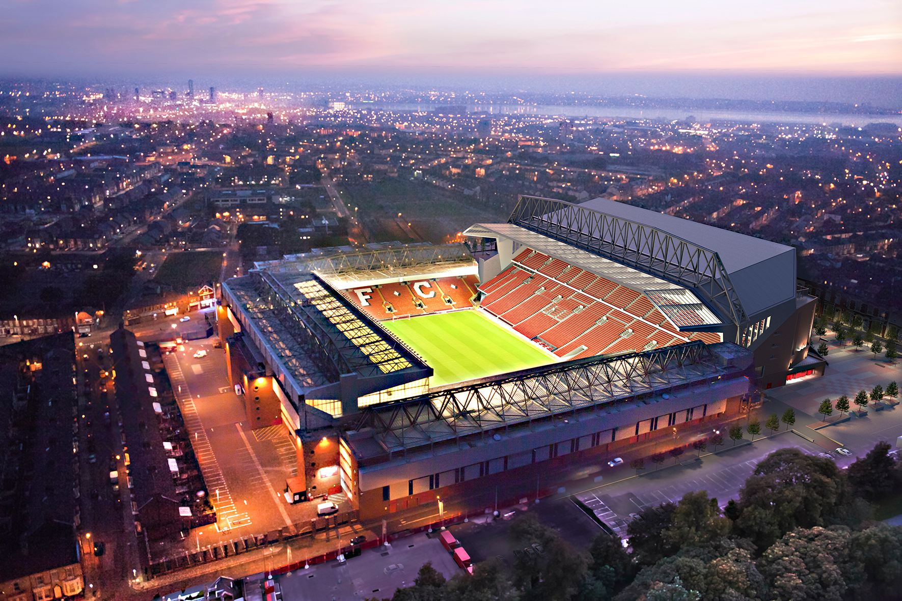

«Энфилд» был построен в 1884 году, на земле прилегающей к району Стэнли Парка. Изначально стадион был домашней ареной «Эвертона». Позже переехавшего на «Гудисон Парк», из-за спора вокруг аренды, с владельцем стадиона, Джоном Хоулдингом. Оставшись без команды, Хоулдинг основал «Ливерпуль» в 1892 году, при этом команда до сих пор играет на «Энфилде». Изначальная вместимость стадиона была всего 20 000, хотя на первом матче команды присутствовало 100 человек.
В 1906 году терраса стадиона, была названа «Спион Коп», в честь холма в провинции Квазулу-Наталь. Холм был местом сражения при Спион Коп, во время Второй англо-бурской войны, на этом месте погибло более 300 человек из Ланкашира, большинство из которых были уроженцами Ливерпуля. Максимальная вместимость трибуны была 28 000 мест, что позволило ей стать крупнейшей одноярусной трибуной в мире. Многие трибуны в Англии также получали названия Спион Коп, но трибуна на «Энфилде» крупнейшая из них.
